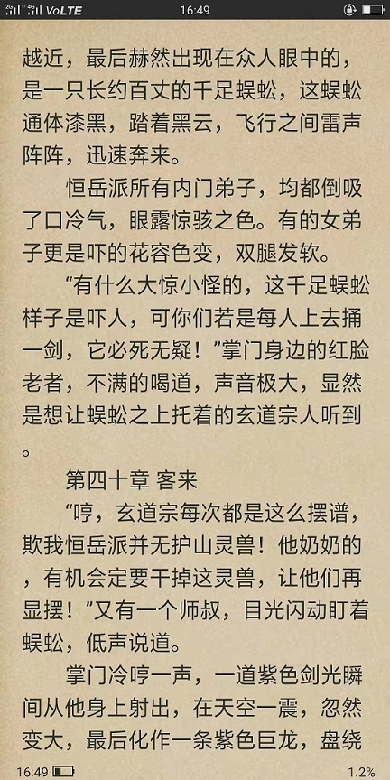
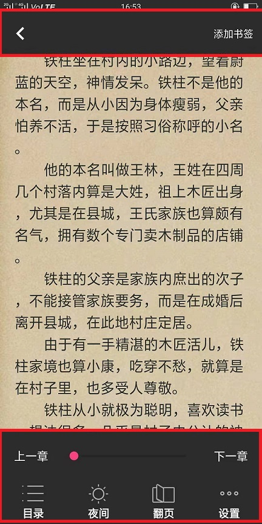

简介
安卓平台下支持小说搜索、下载、阅读的小说阅读器。
本软件使用java + android sdk进行开发
本软件支持支持多线程下载/更新。
安卓平台下支持小说搜索、下载、阅读的小说阅读器。
本软件使用java + android sdk进行开发
本软件支持支持多线程下载/更新。
点击主页下载按钮，然后保存文件文件到本地，当下载完毕的时候，您会得到一个apk文件
手机上单击此文件即可自动进行安装
点击搜索栏目，会进入搜索页面，如下图：
在搜索页面中，输入一个小说名称，然后点击搜索，当搜索完成，在匹配列表中，单击下载按钮即可，如下图：
当下载完毕后，小说会自动添加到书架
在搜索页面中，输入一个需要更新的小说名称（需要确保之前已经下载在本地），然后点击搜索，在匹配列表中，单击更新按钮即可，如下图：
点击下载栏目，会进入下载页面, 如下图：
在下载页面，点击上方的所有下载栏目，如下图：
在下载页面，点击上方的已经完成栏目，如下图：
在下载页面，点击上方的正在下载栏目，如下图：
点击书架栏目，会进入书架页面, 如下图：
在书架页面，手指长按屏幕，则会弹出删除小说窗口，选中需要删除的小说，点击删除所选即可，如下图所示：
在书架页面，手指点击您要看的小说，则会自动弹出窗口显示小说内容，如下图所示： 
1.在阅读界面，然后手指点击屏幕中心，上侧和下侧会弹出菜单如下图所示：  2.点击目录菜单，会自动弹出章节目录，如下图所示：
1.确保在阅读界面，然后手指点击屏幕中心，上侧和下侧会弹出菜单如下图所示：
2.点击右上角的添加书签按钮，则会添加书签
1.在阅读界面，然后手指点击屏幕中心，上侧和下侧会弹出菜单如下图所示： 2.点击目录菜单，会自动弹出章节目录，如下图所示： 3.在弹出的界面上，点击上侧的第二个Tab按钮，即可打开书签页面，点击下侧的指定条目即可自动跳转到对应书签的位置,如下图所示：
1. 在阅读界面，在屏幕中间点击唤出菜单，然后点击夜间模式则会进入夜间模式，如下图所示：
本软件还支持其他设置，比如亮度设置，字体设置，背景设置..., 可以在唤醒的菜单中设置菜单项中进行设置